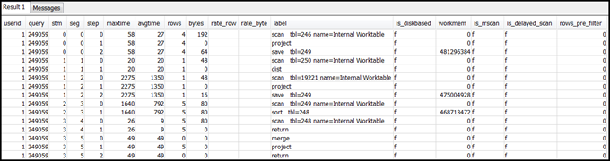

Die vorliegende Übersetzung wurde maschinell erstellt. Im Falle eines Konflikts oder eines Widerspruchs zwischen dieser übersetzten Fassung und der englischen Fassung (einschließlich infolge von Verzögerungen bei der Übersetzung) ist die englische Fassung maßgeblich.
Verwenden der Ansicht SVL_QUERY_SUMMARY
Gehen Sie wie folgt vor, um eine Abfragezusammenfassung nach Streams zu analysieren:
-
Führen Sie die folgende Abfrage aus, um die Abfrage-ID anzuzeigen:
select query, elapsed, substring from svl_qlog order by query desc limit 5;Untersuchen Sie den Abfrageausschnitt im Feld
substring, um herauszufinden, welcherquery-Wert Ihrer Abfrage entspricht. Wenn Sie die Abfrage mehrmals ausgeführt haben, verwenden Sie denquery-Wert aus der Zeile mit dem niedrigerenelapsed-Wert. Dies ist die Zeile für die kompilierte Version. Wenn Sie viele Abfragen ausgeführt haben, können Sie den in der LIMIT-Klausel verwendeten Wert heraufsetzen, um sicherzustellen, dass die Abfrage berücksichtigt wird. -
Wählen Sie Zeilen aus SVL_QUERY_SUMMARY für Ihre Abfrage aus. Ordnen Sie die Ergebnisse nach Stream, Segment und Schritt an:
select * from svl_query_summary where query = MyQueryID order by stm, seg, step; -
Ordnen Sie die Schritte und die Operationen in dem Abfrageplan einander zu. Verwenden Sie dabei die Informationen in Zuweisung der Informationen in Abfrageplan und Abfragezusammenfassung. Zusammengehörige Elemente sollten näherungsweise die gleichen Werte für Zeilen und Bytes (jeweils Zeilen * Breite aus dem Abfrageplan) haben. Falls sich hier unerwartete Abweichungen ergeben, finden Sie empfohlene Lösungen unter Die Tabellenstatistik fehlt oder ist veraltet..
-
Überprüfen Sie, ob das Feld
is_diskbasedfür einen Schritt den Wertt(true) hat. Hashes, Aggregat- und Sortierfunktionen sind Operatoren, die mit hoher Wahrscheinlichkeit Daten auf den Datenträger schreiben, falls das System nicht genügend Arbeitsspeicher für die Verarbeitung der Abfrage zugeteilt hat.Falls
is_diskbasedwahr ist, finden Sie empfohlene Lösungen unter Ungenügende Speicherzuteilung für die Abfrage. -
Überprüfen Sie die Werte des Feldes
labelund überprüfen Sie, ob sich in den Schritten eine AGG-DIST-AGG-Sequenz befindet. Eine solche Konstellation weist auf eine Aggregierung in zwei Schritten hin, die kostenintensiv ist. Sie können dieses Problem beheben, indem Sie die GROUP BY-Klausel so ändern, dass der Verteilungsschlüssel verwendet wird (bei mehreren der erste). -
Überprüfen Sie für jedes Segment den Wert von
maxtime(ist für alle Schritte in einem Segment gleich). Identifizieren Sie das Segment mit dem höchstenmaxtime-Wert und durchsuchen Sie die Schritte in diesem Segment nach den folgenden Operatoren.Anmerkung
Ein hoher
maxtime-Wert muss nicht zwangsläufig ein Problem bei dem Segment bedeuten. Auch Segmente, bei denen dieser Wert hoch ist, können schnell verarbeitet worden sein. Die Zeitmessung wird für alle Segmente in einem Stream gleichzeitig gestartet. Einige nachgelagerte Segmente können aber erst dann ausgeführt werden, wenn Daten aus vorangehenden Segmenten abrufbar sind. Dies führt dazu, dass offenbar viel Zeit benötigt wird, weil dermaxtime-Wert die Warte- und die Verarbeitungszeit beinhaltet.-
BCAST oder DIST: In diesen Fällen kann ein hoher Wert von
maxtimeaufgrund einer Umverteilung einer großen Anzahl an Zeilen zustande kommen. Empfohlene Lösungen finden Sie unter Suboptimale Datenverteilung. -
HJOIN (Hash-Join): Wenn der betreffende Schritt im Feld
rowsim Vergleich zumrows-Wert im abschließenden RETURN-Schritt in der Abfrage einen sehr großen Wert hat, finden Sie empfohlene Lösungen unter Hash join. -
SCAN/SORT: Suchen Sie nach einer einem Join-Schritt vorausgehenden SCAN-SORT-SCAN-MERGE-Schrittfolge. Ein solches Muster weist darauf hin, dass unsortierte Daten gescannt, sortiert und dann mit dem sortierten Bereich der Tabelle zusammengeführt werden.
Überprüfen Sie, ob der Zeilenwert für den SCAN-Schritt im Vergleich zu dem Zeilenwert im abschließenden RETURN-Schritt in der Abfrage einen sehr großen Wert aufweist. Ein solches Muster weist darauf hin, dass die Ausführungs-Engine Zeilen scannt, die später verworfen werden, was ineffizient ist. Empfohlene Lösungen finden Sie unter Nicht ausreichend restriktives Prädikat.
Falls der
maxtime-Wert für den SCAN-Schritt besonders hoch ist, finden Sie empfohlene Lösungen unter Suboptimale WHERE-Klausel.Falls der
rows-Wert für den SORT-Schritt ungleich Null ist, finden Sie empfohlene Lösungen unter Unsortierte oder falsch sortierte Zeilen.
-
-
Überprüfen Sie die Werte für
rowsundbytesin den 5 bis 10 Schritten vor dem abschließenden RETURN-Schritt, um sich einen Eindruck davon zu verschaffen, welche Datenmengen an den Client zurückgegeben werden. Dies ist nicht immer ganz einfach.In der folgenden Zusammenfassungsabfrage sehen Sie beispielsweise, dass der dritte PROJECT-Schritt einen Wert für
rows, aber nicht fürbyteshat. Wenn Sie in den vorangehenden Schritten nach demselbenrows-Wert suchen, finden Sie den SCAN-Schritt mit Zeilen- und Byteinformationen:
Wenn die zurückgegebene Datenmenge unerwartet groß ist, finden Sie empfohlene Lösungen unter Sehr große Ergebnismengen.
-
Überprüfen Sie, ob der Wert für
bytesverglichen mit denrows-Werten für andere Schritte relativ hoch ist. Dieses Muster kann darauf hinweisen, dass eine große Anzahl an Spalten ausgewählt ist. Empfohlene Lösungen finden Sie unter Große SELECT-Liste.